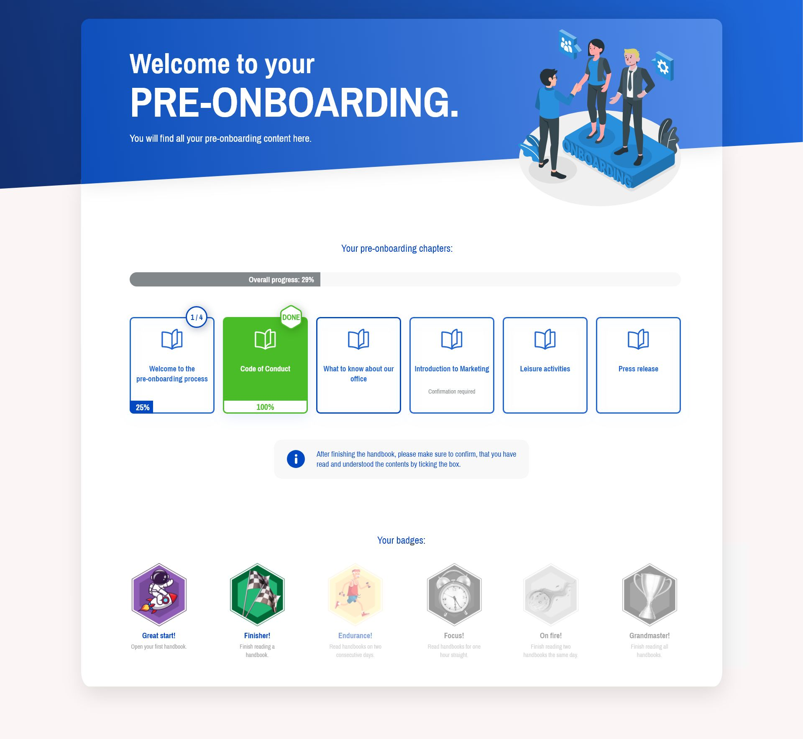

UI Design
Applicant View
UI für eine Bewerberansicht mit klarer Struktur und guter Scannbarkeit.

UI Design
Kanban View
Board-Ansicht für viele Zustände und Aktionen. Klar aufgebaut und leicht zu erfassen.

Dashboard
Statistics Dashboard
Datenintensive Oberfläche mit Fokus auf Übersicht und schnelle Priorisierung.

Product Design
Pre-Onboarding
UI-Strecke für einen ruhigen, klaren Einstieg vor dem eigentlichen Start.

Webdesign
Janne Heikkinen
Website mit ruhiger visueller Sprache, klarem Aufbau und viel Weißraum.

Webdesign
Sushi San
Website für Sushi San, von Design bis Code umgesetzt. Klar, schnell und direkt auf das Produkt ausgerichtet.

Webdesign
Franka
Älteres Website-Konzept für meine Schwester. Persönlich, ruhig und bewusst etwas weicher angelegt.
Hero Design
Think Tank United
Hero-Page-Entwurf aus einem dreitägigen Design-Bootcamp zu Adobe XD Grundlagen.

Motion
Webinar Intro
Kurzes Intro mit sauberem Timing, klarer Typografie und ruhigem Einstieg.
Infografik
DRA Consulting
Infografik für komplexe Inhalte, klar strukturiert und schnell verständlich.

3D / Motion
Conveyor Belt Render
Technischer 3D-Render mit sauberer Bewegung, Form und Materialität.
Motion
Escape Room
Kurzer Teaser mit dichter Stimmung und klarer visueller Idee.
Corporate Design
Sofigate
Visuelle Arbeit im B2B-Umfeld mit klarer Markenführung und guter Lesbarkeit.

Campaign Assets
Roll-ups
Serie großformatiger Werbemittel mit konsistenter Gestaltung über mehrere Motive hinweg.

Messedesign
Roll-up JucaPlus
Roll-up mit klarer Botschaft, gedacht für gute Lesbarkeit auch aus Distanz.

Editorial
Mediensucht Cover
Covergestaltung mit klarer Bildidee, Kontrast und ernster Tonalität.

Helsinki Poster
Posterentwurf mit Fokus auf Typografie, Farbe und Rhythmus.

Merch
Hoodie
Grafik für ein Kleidungsstück mit reduziertem Ansatz und klarer Platzierung.

Compositing
Image Editing Compilation
Auswahl aus Retusche, Compositing und unterschiedlichen visuellen Looks.

Bildsprache
Baseballer
Freie Bildarbeit mit Fokus auf Komposition, Kontrast und Wirkung.

Webdesign
Autohaus
Entwurf für einen Auftritt im Automobilbereich, sachlich und klar geführt.

Branding
Lumipallo
Gestalterische Arbeit mit klarer Linie, Stimmung und Wiedererkennbarkeit.

Motion
21 Pouches
Kurze Produktanimation für Social Media, direkt und klar aufs Produkt fokussiert.
Visual Design
Nicotine Pouches
Produktvisual mit klarer Bildsprache und direkter, markanter Inszenierung.